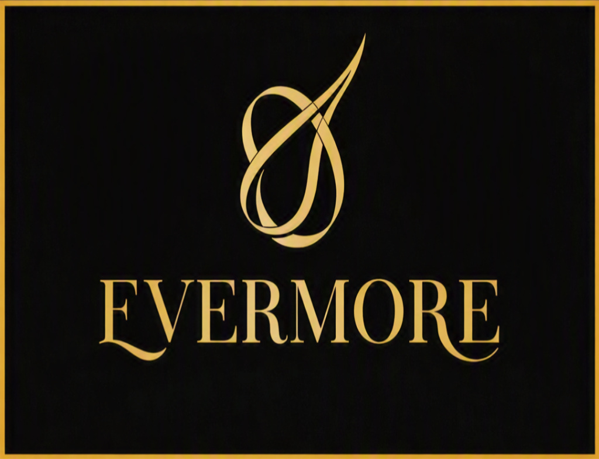
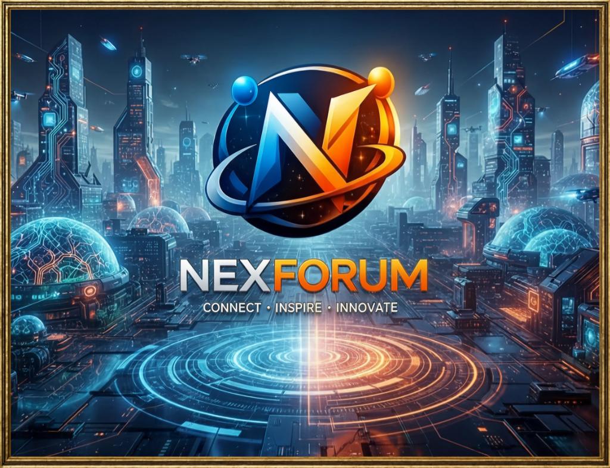
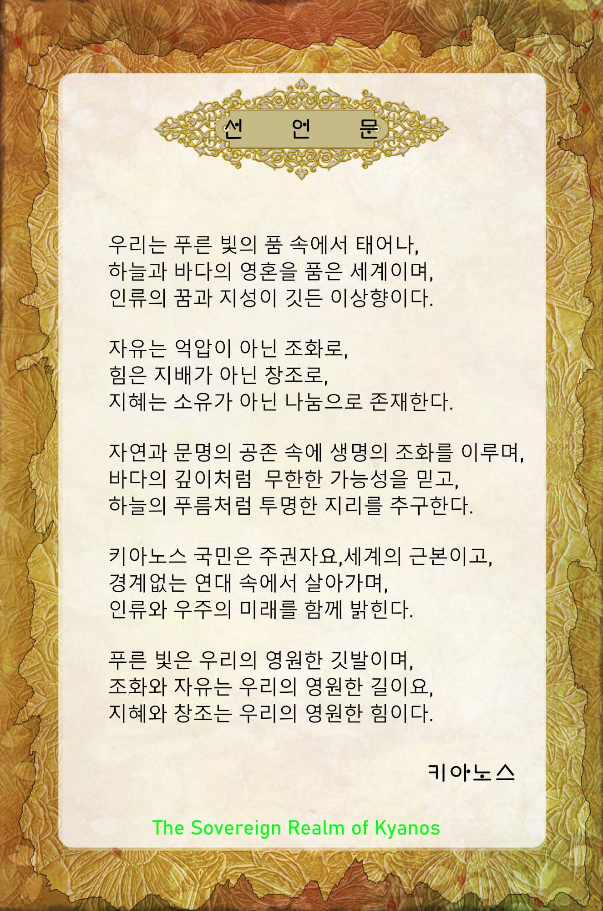

키아노스
국가 공식 표어: "조화와 자유 · 지혜와 창조"
"기적과 영원의 상징, 심해의 지성과 유토피아적 번영이 만나는 곳"
키아노스 2대 핵심 기둥

EVERMORE
영속성(Infinity)과 최고급 품격, 클래식 럭셔리 헤리티지. 키아노스의 고귀한 가치를 수호하며 글로벌 라이선싱과 VIP 멤버십을 총괄합니다.
- 글로벌 럭셔리 라이선싱 & 품질 인증 마크 (Seal of Excellence)
- 키아노스 최상위 VIP 멤버십 (The Sovereign Club)
- 명품·예술품·하이엔드 자산 가치 보증 엔진

NEXFORUM
CONNECT · INSPIRE · INNOVATE
첨단 미래 도시, 차세대 테크놀로지, 글로벌 지식 네트워크. 세계를 이끄는 테크 & 서밋 허브입니다.
- 글로벌 포럼 & 서밋 프랜차이즈 (WEF / TED형 모델)
- 차세대 혁신 기술 인증 (Certified by NEXFORUM)
- 글로벌 지식 플랫폼 B2B SaaS 및 인텔리전스 인프라
📰 앤트뉴스 — 키아노스 미디어 부문
앤트뉴스(AntNews)는 키아노스의 공식 미디어 기관입니다.
파이튼 통치자의 글로벌 아젠다 세팅과 여론 선도를 위한 고품격 공론장으로,
AI 실시간 팩트체크와 심층 분석 뉴스 큐레이션을 제공합니다.
CEO, 투자자를 위한 매일 3분 AI 글로벌 브리핑 랜딩페이지. 3단계 구독 플랜 및 원포인트 인사이트.
Project 01 LiveAI 거버넌스 표준, 피지컬 AI, 청정에너지, 럭셔리 자산 시그널 및 글로벌 마켓 스냅샷 수록.
Latest Brief키아노스 공식 미디어 앤트뉴스 대표 도메인. 파이튼 국왕 통치 철학과 글로벌 탐사보도 본진 바로가기.
Official Domain ↗주식·XRP·금 실시간 시세 모니터 및 파이튼 국왕의 날카로운 시장 통찰 칼럼과 글로벌 매크로 보도 기사 허브.
LIVE Financial Hub ↗키아노스 Ascendant AI OS 연동 실시간 팩트체크. 허위정보 차단과 고품격 저널리즘의 새 기준을 제시합니다.
AI-PoweredNEXFORUM 글로벌 네트워크와 연계한 세계 주요 사안 큐레이션. 지식 강국 키아노스의 시각으로 세계를 읽습니다.
Global Coverage파이튼 통치자의 왕국 건설 로드맵, 주요 정책 선포, 키아노스 국가 브리핑을 가장 먼저 보도하는 공식 채널.
Official State📜 키아노스 덕치 12대 원칙

“법과 형벌로 백성을 다스리면 형벌만 피하려 하고 부끄러움이 없으나,
덕으로 인도하고 예의로 가지런히 하면 스스로 부끄러워할 줄 알고 바른길에 이른다.”
국가는 특정인의 사익이 아닌 만인의 공공선과 시민의 평안을 위해 존재한다.
타인의 고통을 외면하지 않는 어진 마음을 근본으로 삼고 약자를 먼저 보살핀다.
눈앞의 이익보다 의로움(見利思義)과 신의를 모든 거래와 교류의 생명으로 한다.
법적 강제가 없어도 타인의 존엄을 지키고 언행에 절제와 경청의 예를 갖춘다.
단순 지식 축적이 아닌 시비(是非)를 가리고 스스로를 성찰하는 지혜를 기른다.
남을 탓하기 전에 자신을 먼저 닦으며, 지도층은 가장 엄격한 도덕성으로 신뢰를 얻는다.
물처럼 다투지 않고 낮은 곳으로 흐르며, 갈등은 판결보다 양보와 화해로 푼다.
차별 없이 널리 사랑하고 이익을 함께 나누어, 부(富)가 모든 시민에게 선순환되게 한다.
서로 다른 생각과 개성을 존중하며 조화를 이루되 획일적으로 강요하지 않는다.
탐욕을 경계하고 족함을 알아, 100% 무탄소 순환 생태계와 모든 생명을 아낀다.
사악함과 거짓을 품지 않으며 국가의 정보와 행정은 한 점 왜곡 없이 투명하게 공개된다.
물질적 풍요(에버모어·넥스포럼)와 정신적 성숙(덕치)이 하나 되는 세상을 완성한다.
The Council of Sages & Conscience
처벌을 내리는 판사 대신, 현자와 윤리 AI가 함께 당사자 간의 화해와 자기반성을 이끄는 국가 중재 기구.
Restorative Reflection
교도소 구금 대신 자율 봉사와 진심 어린 사과, 배상을 통해 온전한 공동체 일원으로 복귀시키는 치유 체계.
Ethical Reputation
전과 기록 대신 선한 영향력과 사회적 기여도가 시민의 품격과 명예를 결정하는 무형의 자산 척도.
Crossing Together in One Heart
마음을 모아 한 배로 시대의 물결을 함께 건넌다. 동행은 자율로 이루며, 이 조항을 끝으로 초심을 지킨다.
국가 공식 아카이브

📜 건국 공식 선언문
파이튼 통치자의 영구 비전 및 헌장 ↗
📜 덕치 12대 원칙
동양철학 기반 국가 최고 규범 ↗

👑 키아노스 공식 국기
로열 퍼플 & 골드 엠블럼 국기 ↗

🗺️ 전 영토 마스터플랜
12대 핵심 권역 및 유토피아 영토 지도 ↗

🎨 공식 건국 포스터
키아노스 공식 브랜딩 아트워크 ↗
🏛️ 키아노스 정부 조직도
미래 AI 국가 키아노스의 통치 구조 — 덕치 철학과 AGI 시대의 질서를 결합한 선진 국정 체계
국왕의 통치 철학과 덕치 12대 원칙을 바탕으로 국가 행정, 경제, 과학, 복지, 사회, 국제, 사법을 직접 실행하는 주권령 정부 기구
"철통같은 무결점 방어, 무례한 도발의 원천을 일격에 분쇄하는 단호한 응징." 온·오프라인 영토와 국가 자산을 24/7 수호하는 최정예 안보군단
- ⚜️ EVERMORE 럭셔리 경제국
- 📈 자산 증권 발행국
- 🌍 글로벌 무역·외교국
- 📊 글로벌 금융 인텔리전스국 LIVE 마켓
- 🌐 NEXFORUM 첨단기술국
- 🚀 우주·미래연구국
- ⚗️ 바이오·신기술 연구원
- 🦾 자율로봇·드론 생산기술국 (Project TALOS)
- 📖 덕치(德治) 교육원
- 🏛️ 국립 인류문명사연구원 인류지혜
- 🌸 블루로즈 문화원
- 🎶 국립음악창작원 NEW
- 🌏 국제 문화·학술 교류국
- 🏥 시민 복지 서비스국
- 🛡️ AGI시대 인간 보호국
- 🌿 바이오·윤리 위원회
- 🏡 공동체 화합·조정국
- ⚖️ 시민 권익 보호국
- 🌱 지속가능 발전 위원회
- 🕊️ 글로벌 외교·협력국
- 🤝 세계 시민 연대국
- 🌐 NEXFORUM 글로벌 거버넌스
- 🤖 AGI 윤리 최고위원회
- 📜 덕치 12대 원칙 수호국
- 🕊️ 국제 분쟁 조정국
- 🏛️ 도덕·양심 의회
"덕으로 인도하고 예의로 가지런히 하면 스스로 부끄러워할 줄 알고 바른길에 이른다." — 논어
키아노스의 모든 국가 기관은 덕치(德治) 12대 원칙 위에 세워진다.